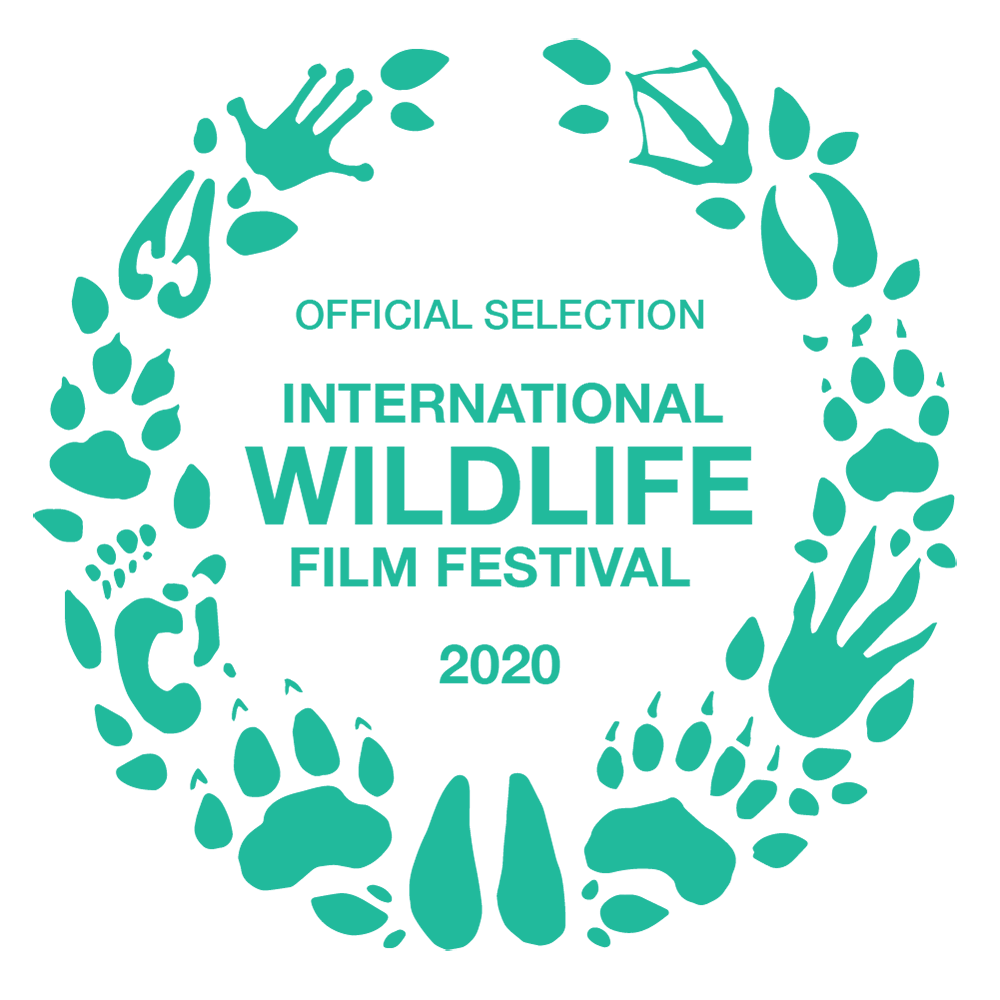
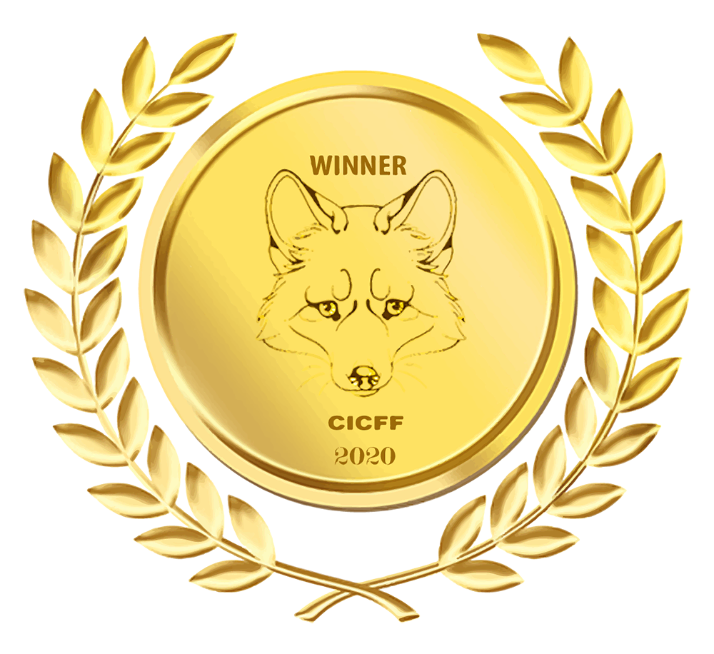

Kea, native mountain-dwelling parrots of New Zealand, are known for their mischievous and playful behavior. But they are far more than meets the eye. Research into their minds has proven them to be amazing problem-solvers. What makes them so intelligent?
University of Otago and The Wild Bits Present “The Birds of Play” Featuring Amalia Bastos & Lydia McLean Directed & Edited by Upamanyu Das Narrated by William Ray Music by Chris Zabriskle, Poddington Bear & Blue Dot Sessions Illustrations Priyankar Gupta With guidance from Neil Harraway, Gianna Savoie, Robert Brown & Jeff Avery Research Assistance Judy Diamond & Alan Bond Special thanks to Matthew Goodman, Corey Mosen & Willowbank Wildlife Reserve Filmed on Location at Arthur’s Pass National Park
Available to stream on Vimeo.
Awards


People

Upamanyu Das
Director / Editor
Reviews
The Birds of Play is an informative and appealing little film. In its brief time span, the documentary packs in a good deal of information and research on its subject without ever straining the viewer. Tempting though it may be to concentrate on the eccentricities and antics of this remarkable bird, the film keeps us rooted in the wild and the behaviour and threats of its life there. It also allows time for us to enjoy scenes in the wild without commentary, and the accompanying music is a non-intrusive, pleasant addition.
> Joanna Van Gruisen (Wildlife Photographer & Filmmaker)